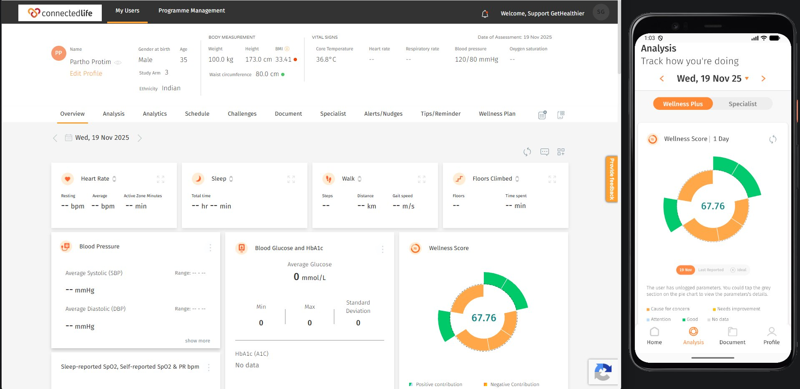

Overview
Alexandra Hospital's application spans both mobile and web, and my work here was weighted heavily toward manual testing, walking through flows by hand, logging defects, and verifying fixes. I also built out a layer of automation for the web application using Selenium to cover key regression checks.
My role
ConnectedLife's unique combination of AI capabilities and human expertise sets them apart in the digital health space. Their responsiveness and pioneering approach have made a tangible difference to this work, seen not just as a vendor, but as a long-term partner in driving impactful, technology-enabled care to Alexandra Hospital and its patients.
What I did
- Owned full-cycle manual testing across both the mobile app and web application, covering functional, data, and UI validation end to end.
- Verified data accuracy across the platform, checking that patient data, readings, and records were captured, calculated, and displayed correctly across every screen.
- Validated business logic against product specifications, testing edge cases and boundary conditions to make sure the system behaved correctly under real-world scenarios.
- Tested alerts and notification nudges for accuracy and timeliness, confirming they triggered correctly against defined thresholds and reached users as expected.
- Walked through all user flows end to end, onboarding, daily use, and edge-case paths, to catch issues early and ensure a smooth, reliable experience.
- Worked closely with developers and product team through regular discussion and feedback loops, using findings from each testing cycle to continuously improve product quality.
- Built Selenium automation for the web application to cover key regression checks, reducing manual effort on repeat test cycles.
- Logged and tracked defects by severity, from show-stoppers down to low-priority issues, following through with developers until each was verified and closed.